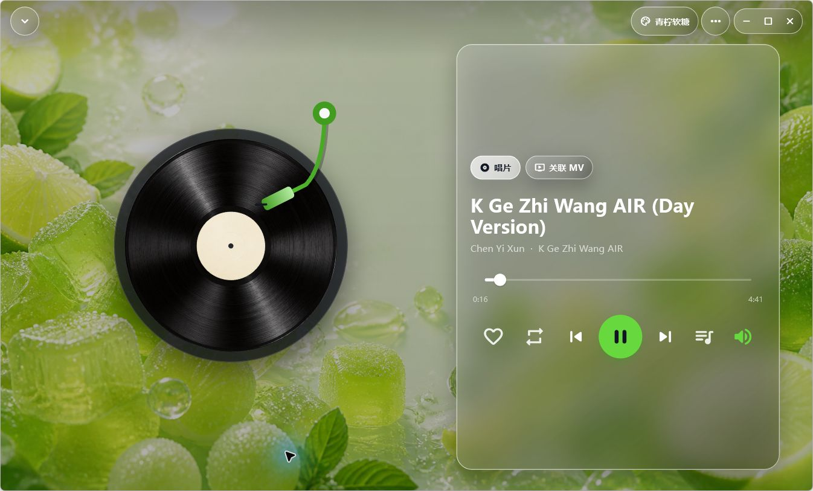
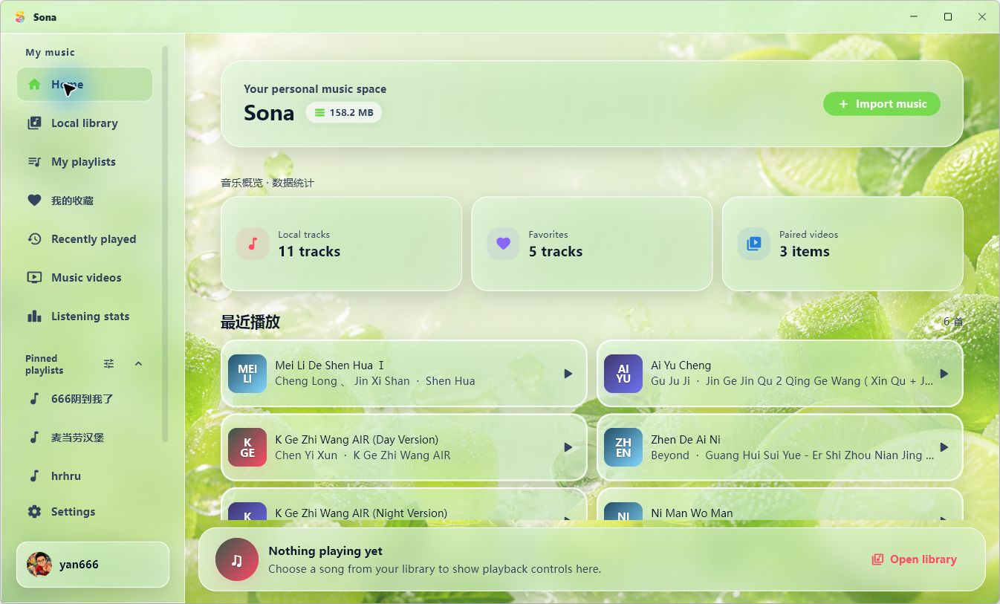

LOCAL FIRST
Playback that survives offline
Your local library, queue, playlists, favorites and history do not depend on the network. When the cloud is unavailable, Sona tells you clearly without disrupting local playback.
Windows · Android · Public preview
Sona is a local-first music player built to work offline. It brings music, MVs, queues, smart organization and expressive themes into one calm, effortless space.

Why Sona
Sona is designed around local files from day one: reliable playback comes first, while cloud sync remains an enhancement rather than a dependency. Your library lives in a local SQLite database, so scanning, favorites, playlists and listening history keep working offline.
Core highlights
From importing a track to continuous playback, organization, identification, favorites, MVs and the full player, every step is designed as part of one coherent product.
LOCAL FIRST
Your local library, queue, playlists, favorites and history do not depend on the network. When the cloud is unavailable, Sona tells you clearly without disrupting local playback.
AUDIO + VIDEO
Sona detects media types, links records and MVs, and keeps the player interface in sync as the queue changes.
SMART METADATA
Media tags, filename cleanup, MusicBrainz and optional Chromaprint / AcoustID fingerprint fallback work together to refine track, artist and album metadata.
YOUR LIBRARY
The same track keeps consistent playback, context-menu and queue behavior across every entry point, so the music you want is always easy to reach.
PERSONAL THEMES
Liquid glass, vinyl playback, adaptive accent colors and wallpaper-specific effects form complete themes. Selection states, text contrast and controls adapt with them.
Real interface
These screens come directly from the Windows build. Lime Candy is only one look—Sona includes multiple wallpapers, palettes and effects.

Engineering
Sona uses Flutter for a two-platform experience, SQLite for local data, SHA-256 for deduplication, and cancellation, debouncing and graceful fallback for network, cloud and rapid queue operations.
View public source ↗Track metadata pipeline
Privacy and boundaries
Local databaseMusic files and core metadata stay on your device.
Optional identification servicesPublic music services are contacted only when you request identification.
Backup and restoreVersion 0.5.0 can export and restore the complete Sona library and its managed assets.
Get started
Sona 0.5.0 public preview. No subscription—download and listen.
Prefer a portable build? Download the Windows x64 portable ZIP ↗
Official Sona releases have used the permanent Android signing identity since 0.4.51. The official 0.5.0 APK updates official 0.4.51 installations in place. If you have the 0.4.50 development-signed APK or another differently signed build, sync what you need and keep your media files, then uninstall that build once before installing 0.5.0. Uninstalling clears Sona's app-private database, settings, and automatic snapshots, but not media in normal shared folders. Export a complete backup before migrations. Windows packages are not Authenticode-signed yet, so SmartScreen may show “Unknown publisher.” Download only from this page or GitHub Releases.